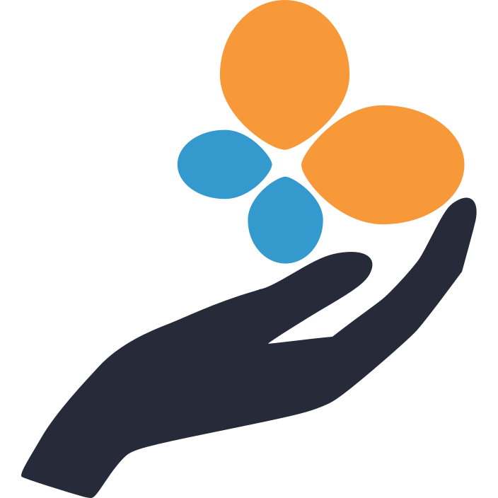

OPEN SOURCE TO OPEN RESEARCH
Chiara Marmo
Community & Operation Officer @ scikit-learn Inria Consortium


What is Open Source Software (OSS)?
→ Distributed under a license that implies source code sharing
→ While proprietary software usually hides source code from the user
→ Users are free to read the code, modify and redistribute it (with the same license)
That does not mean that OSS is for free
What is Open Research?
→ Reproducible and accessible research
→ Open data: accessible, searchable and reusable
→ Open tools: reusable and Open Source software
→ Open access to papers
That does not mean that Open Research is for free
What do they have in common?
Open Source is a tool for Open Research
Open Source was born in a research environment
...sometimes without endorsement...


Research makes extensive use of Open Source Software
...sometimes for bad reasons...Source code availability is key to reproducibility
Open Source is available at a lower cost ... because maintenance costs are hidden
The research environment gives you the opportunity to contribute to Open Source Software
...if your boss is ok with that...Ad hoc or general data analysis tools?
More users, better testing, more bug reports, .... more bug fixes
Lower costs in exchange of contributions to maintenance and help to the community
Increase your technical skills
Side note: Academic Benefits of Using git and GitHubA happy relationship
❤️
The first black hole image
❤️
The Legacy Survey of Space and Time pipeline
❤️
The pangeo community
❤️
scikit-learn
A troubled relationship
...your boss might say...
üíî
Don't spend your time in building something that others will use
üíî
No first author papers if you are just writing software
üíî
This wouldn't work in your specific case
üíî
This is too buggy and nobody is answering, we can do better
A troubled relationship
...despite the fact that...
üí° An increasing number of journals are dedicated to scientific computation and code
üí° Papers about good reusable software have a lot of citations (...yet not enough)
üí° Open access to data and tools is increasingly required by funding agencies
üí° Public institutions have started encouraging employers to use and contribute to OSS
"This software is provided AS IS"
The Foundation model
→ To fund the project without taking away its freedom
→ To make Open Source Software a public good

The scikit-learn Consortium @ Inria Foundation

Employ central contributors to the project
Support the scikit-learn community
Spot and promote new key contributors
Side note: The Consortium is happy to receive spontaneous applications!
THANKS!
- fondation.scikit-learn@inria.fr
- This presentation online
- Made with ❤️ using reveal.js